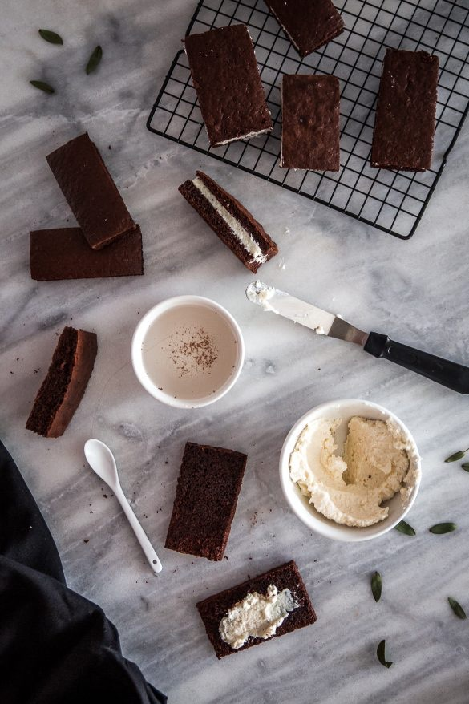
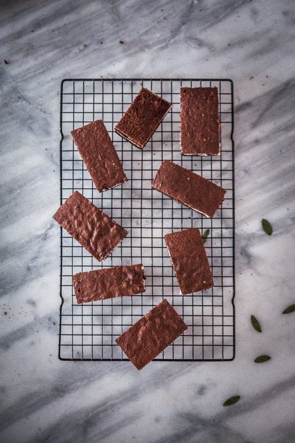

La recette des Kinder Delice

Aujourd’hui je vous retrouve avec une recette qui me rappelle mon enfance et qui vous rappellera peut être un peu la vôtre ou celle des vos enfants car il s’agit de la recette des très célèbres kinder délice!
Depuis le temps que je voulais publier cette recette ici!! Si j’avais su un jour que je ferai des kinder délice et que je posterai la recette sur mon blog je ne l’aurai jamais cru!!!
Après la recette du napolitain, il fallait forcément que je me lance dans la réalisation des kinder délice qui ont clairement bercé une partie de mon enfance et je peux vous dire que j’en raffolais. Depuis pas mal d’années maintenant, c’est assez rare que j’achète des biscuits en grande surface alors forcément si je voulais remanger des kinder délice il fallait que je passe par la case cuisine (c’est tellement meilleur)!
Régulièrement, j’ai la chance de travailler pour une marque qui a un univers que j’aime beaucoup, très coloré, très accès vers le fait-maison et vers une pâtisserie accessible de tous les jours (qui sont d’ailleurs des valeurs qui me correspondent plutôt bien en cuisine). Il s’agit de la marque vahine pour qui j’ai récemment réalisé ces kinder délice et j’ai sauté sur l’occasion pour publier la recette par ici aussi. Quand on lit la recette je suis d’accord avec vous ça fait un peu peur ! Finalement la recette est un peu longue à lire mais les kinder délice se préparent assez facilement si on s’organise un peu et ça va plutôt vite. Si je vous ai convaincue 😉 et que vous vous lancez dans la recette vous verrez que la génoise parait plutôt sèche mais c’est normal. Avec le sirop de punchage, la crème au mascarpone et le tout recouvert de chocolat les génoises redeviennent parfaitement moelleuses. Vous pouvez les réaliser à la noix de coco ou à la vanille c’est comme vous voulez! Ma sœur et moi on était fan de ceux à la noix de coco donc moi j’ai opté pour ce parfum 🙂 Je vous laisse découvrir la recette plus bas et j’espère vraiment vraiment qu’elle vous plaira! J’attends vos retours 🙂 très belle soirée à tous ♥
Ingrédients
- Oeufs - 3
- Sucre semoule - 60g
- Sucre vanillé ou 1càc de vanille en poudre - 1
- Farine - 25g
- Farine de maîs (maïzena) - 50g
- Cacao en poudre (non sucré de préférence plutôt choisir un cacao à 70% de cacao) - 30g
- Levure chimique - 1/2càc
- Sel - 1 pincée
- Lait - 3càs
- Eau - 100ml
- Sucre - 50g
- Extrait de vanille (ou eau de vie) - 1 càs
- Mascarpone - 250g
- Lait concentré sucré - 50g
- Extrait de vanille - 1 càc
- Noix de coco râpée (facultatif) - 50g
- Sucre glace (facultatif) - 1 càs
- Chocolat de couverture - 180g
- Huile neutre - 1,5 càs
- Vermicelle de chocolat blanc et noir
- Noix de coco râpée
Instructions
- Préchauffez le four à 180°C
- Dans un saladier, fouettez les jaunes d'œufs avec le sucre et le sucre vanillé jusqu'à ce que le mélange blanchisse
- Dans un bol, mélangez la farine avec la levure, le cacao et tamisez le mélange au-dessus des jaunes d’œufs blanchis
- Mélangez et ajoutez le lait
- Dans un autre saladier, montez les blancs en neige avec une pincée de sel
- Une fois que les blancs sont bien fermes, incorporez-les délicatement au mélange précédent à l'aide d'une maryse en prenant soin de ne pas les casser.
- Beurrez votre moule ou tapissez-le de papier sulfurisé
- Versez la préparation dans le moule et enfournez pour 20 min à 180°C
- Laissez totalement refroidir sur une grille
- Dans une petite casserole, versez l’eau et le sucre
- Sur feu doux, laissez le sirop se former (le sucre doit s’être entièrement dissous dans l’eau)
- Mélangez de temps en temps
- Hors du feu, ajoutez la vanille (ou l’eau de vie)
- Laissez refroidir
- Dans un saladier, versez le mascarpone et travaillez-le avec une fourchette pour qu’il s’assouplisse un peu
- Ajoutez le lait concentré sucré et mélangez de façon à obtenir un mélange homogène
- Si vous trouvez que le mélange n’est pas assez sucré vous pouvez ajouter 1càs de sucre glace
- Pour des kinder délice à la noix de coco : ajoutez la noix de coco râpée et mélangez pour bien l’incorporer
- Réservez cette préparation au frais
- Découpez votre génoise en petit rectangle d'environ 5x10cm pour être au plus proche des kinder délice (d'ou l'importance d'avoir un moule carré!) Normalement vous pouvez en faire 8 à 10 max (selon leur taille etc)
- Chaque rectangle obtenu doit faire environ 2-3 cm d’épaisseur
- Coupez les génoises en deux pour obtenir deux couches de génoises identiques
- A l’aide d’une cuillère ou d’un pinceau de cuisine, mouillez (« punchez ») chaque génoise avec le sirop.
- Déposez de la crème sur une des deux génoises puis posez la deuxième génoise dessus pour refermer le gâteau.
- Disposez vos kinder délice sur une grille
- Faire fondre le chocolat de couverture à feu doux avec 1,5 càs d'huile neutre Surveillez la cuisson pour que le chocolat ne brûle pas
- Recouvrir les gâteaux avec chocolat de couverture
- Vous pouvez vous aider d’une spatule pour l’étaler proprement si jamais vous n’avez pas tout recouvert
- Décorez les gâteaux avec de la noix de coco râpée et des vermicelles sur le dessus
- Placez au frais pour une trentaine de minutes le temps que le glaçage durcisse


Les tips de la communauté
Recette très populaire avec 30 commentaires très positifs. Permet de récréer l'emblématique gâteau industriel maison avec succès, montage légèrement délicat mais résultat excellent.
Astuces
- Moule 20x20cm pour les proportions indiquées
- Chocolat de couverture noir sans tempérage obligatoire
- Conservation 3 jours au frigo maximum (portions disparaissent vite !)
- Version noix de coco particulièrement appréciée par l'auteure
- Montage nécessite de la patience mais le résultat en vaut la peine
Variantes suggérées
- Garniture noix de coco alternative très apprécié
- Peut être préparé en grand format comme gâteau d'anniversaire
Ajustements signalés
- badigeonner le moule en silicone de chocolat. Ici, avec l’huile (qui m’a étonnée), c’est un autre procédé.